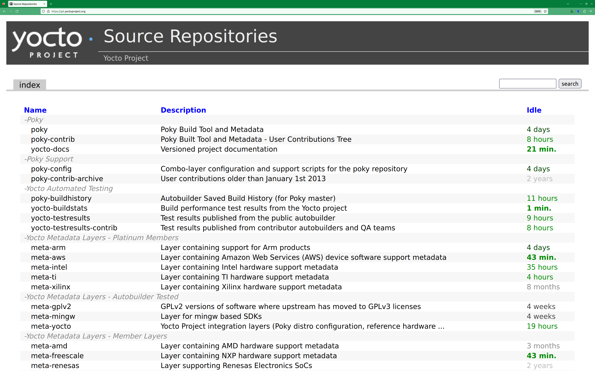
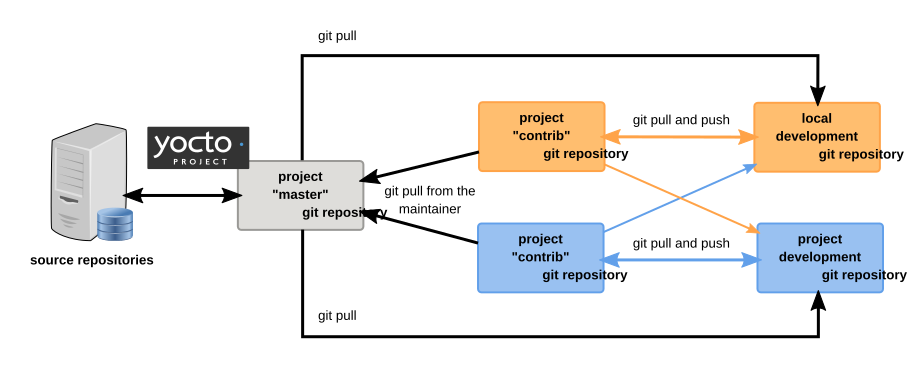

2 L'Ambiente di Sviluppo di Yocto Project
Questo capitolo esamina l'ambiente [environment] di sviluppo di Yocto Project. Il capitolo fornisce concetti relativi all'ambiente di sviluppo di Yocto Project che aiutano a comprendere come si lavora in un ambiente open source, che è molto diverso rispetto al lavoro svolto in un ambiente proprietario chiuso.
Nello specifico, questo capitolo tratta la filosofia open source, i repository del codice sorgente, i flussi di lavoro, Git e le licenze.
2.1 Filosofia Open Source
La filosofia open source è caratterizzata da uno sviluppo software guidato dalla produzione e dalla collaborazione tra pari attraverso una comunità attiva di sviluppatori. Questo si contrappone ai modelli di sviluppo centralizzati più standard utilizzati dalle aziende di software commerciali, dove un insieme finito di sviluppatori produce un prodotto da vendere utilizzando una serie definita di procedure che in definitiva portano a un prodotto finale la cui architettura e il cui codice sorgente sono chiusi al pubblico.
I progetti open source hanno concettualmente diverse agende, approcci e processi di produzione concorrenti. Questi aspetti del processo di sviluppo possono provenire da chiunque nel pubblico (community) che abbia un interesse nel progetto software. L'ambiente open source presenta nuove problematiche relative a copyright, licenze, dominio e consumatori, che lo distinguono dagli ambienti di sviluppo più tradizionali. In un ambiente open source, il prodotto finale, il codice sorgente e la documentazione sono tutti disponibili al pubblico gratuitamente.
Un esempio emblematico di progetto open source è il kernel Linux, inizialmente concepito e creato dallo studente finlandese di informatica Linus Torvalds nel 1991. Al contrario, un buon esempio di progetto non open source è la famiglia di sistemi operativi Windows sviluppata da Microsoft Corporation.
Wikipedia offre un'ottima descrizione storica della Open Source Philosophy. È inoltre possibile trovare informazioni utili su come partecipare alla Linux Community qui.
2.2 Host di Sviluppo
Un host di sviluppo, o Build Host è fondamentale per utilizzare Yocto Project. Poiché l'obiettivo di Yocto Project è sviluppare immagini o applicazioni che vengano eseguite su hardware embedded, lo sviluppo di tali immagini e applicazioni avviene generalmente su un sistema non destinato all'esecuzione del software, ovvero l'host di sviluppo.
È necessario configurare un host di sviluppo per poterlo utilizzare con Yocto Project. Molti ritengono che sia preferibile utilizzare una macchina Linux nativa come host di sviluppo. Tuttavia, è possibile utilizzare un sistema che non esegue Linux come sistema operativo come host di sviluppo. Se si dispone di un sistema basato su Mac o Windows, è possibile configurarlo come host di sviluppo utilizzando un container OCI (tramite Docker o Podman). Una volta completata la configurazione del container, si avrà accesso a un ambiente shell simile a quello di un host di sviluppo basato su Linux.
Se l'host di sviluppo è un sistema che esegue una distribuzione Linux, è comunque necessario prepararlo per l'utilizzo con Yocto Project. Bisogna assicurarsi che la distribuzione Linux installata sul sistema supporti Yocto Project e che siano installati i pacchetti host necessari per lo sviluppo con Yocto Project. Per i passaggi necessari alla configurazione di un host di sviluppo Linux, consultare la sezione "Setting Up a Native Linux Host" nel Manuale di Sviluppo dei Task di Yocto Project.
Una volta configurato il sistema host di sviluppo per utilizzare Yocto Project, esistono diversi modi per lavorare nell'ambiente di Yocto Project:
Riga di Comando, BitBake e Shell: Lo sviluppo tradizionale in Yocto Project prevede l'utilizzo del sistema di compilazione [build] OpenEmbedded Build System, che si basa su BitBake, in un ambiente a riga di comando da una shell sul sistema host di sviluppo. È possibile farlo da un sistema host nativo Linux o da un container. In entrambi i casi, si creano, modificano e compilano immagini e applicazioni all'interno di un ambiente basato su shell, utilizzando componenti e strumenti disponibili tramite la distribuzione Linux e Yocto Project.
Per una descrizione generale delle procedure di compilazione, consultare la sezione "Building a Simple Image" nel Manuale di Sviluppo dei Task di Yocto Project.
Sviluppo di Board Support Package (BSP): Lo sviluppo di BSP prevede l'utilizzo di Yocto Project per creare e testare layer che consentono un facile sviluppo di immagini e applicazioni destinate a hardware specifici. Per sviluppare BSP, è necessario eseguire alcuni passaggi aggiuntivi rispetto a quelli descritti nella configurazione di un host di sviluppo.
Il Manuale del Board Support Package (BSP) di Yocto Project fornisce informazioni sullo sviluppo dei BSP. Per dettagli sulla preparazione dell'host di sviluppo, consultare la sezione "Preparazione dell'Host di Build per Lavorare con i Layer BSP" nella Guida dello Sviluppatore del Board Support Package (BSP) di Yocto Project.
Sviluppo del Kernel: Se si intende sviluppare kernel utilizzando Yocto Project, è probabile che si utilizzi
devtool. Un flusso di lavoro che utilizzadevtoolvelocizza lo sviluppo del kernel riducendo i tempi del ciclo di iterazione.Il Manuale di Sviluppo del Kernel Linux di Yocto Project fornisce informazioni sullo sviluppo del kernel. Per dettagli sulla preparazione dell'host di sviluppo, consultare la sezione "Preparazione dell'Host di Build per Lavorare sul Kernel." nel Manuale di Sviluppo del Kernel Linux di Yocto Project.
Utilizzo di Toaster: L'altro metodo di sviluppo di Yocto Project che prevede l'utilizzo di un'interfaccia che di fatto mette Yocto Project in background è Toaster. Toaster fornisce un'interfaccia per il sistema di build OpenEmbedded. L'interfaccia consente di configurare ed eseguire le compilazioni. Le informazioni sulle compilazioni vengono raccolte e memorizzate in un database. È possibile utilizzare Toaster per configurare e avviare compilazioni su più server di compilazione remoti.
Per le istruzioni su come configurare l'host di sviluppo per utilizzare Toaster e su come utilizzare Toaster in generale, consultare il Manuale Utente di Toaster.
Utilizzo dell'Estensione VSCode: Si può usare l'estensione Yocto Project BitBake per Visual Studio Code per avviare le build BitBake tramite un'interfaccia grafica
Maggiori informazioni sull'estensione VS Code nella pagina del marketplace dell'estensione.
2.3 I Repository del Codice Sorgente di Yocto Project
Il team di Yocto Project mantiene repository di codice sorgente completi per tutti i file di Yocto Project all'indirizzo https://git.yoctoproject.org/. Questo browser di codice sorgente basato sul web è organizzato in categorie per funzione, come plugin IDE, Matchbox, Poky, kernel Linux Yocto e così via. Dall'interfaccia, è possibile cliccare su qualsiasi elemento nella colonna "Name" e visualizzare l'URL in fondo alla pagina necessario per clonare un repository Git per quell'elemento specifico. Avere una copia locale di questi repository Git consente di apportare modifiche, contribuire alla cronologia e, in definitiva, migliorare gli strumenti di Yocto Project, i pacchetti di supporto per le schede (BSP) e altro ancora.
Per qualsiasi versione supportata di Yocto Project, è anche possibile visitare il sito web di Yocto Project all'indirizzo Sito Web di Yocto Project e selezionare la voce "Releases" dal menù "Development" per scaricare un tarball dei repository, un tarball BSP supportato o gli strumenti di Yocto Project. L'estrazione di questi archivi tar fornisce un'istantanea dei file rilasciati.
Nota
Il metodo consigliato per configurare Yocto Project è utilizzare Git per creare una copia locale dei repository upstream.
Si deve lavorare sempre su branch corrispondenti sia per il repository BSP selezionato, sia per i repository OpenEmbedded-Core (OE-Core) e BitBake. Ad esempio, se è stato effettuato il checkout del branch "blacksail" di OpenEmbedded-Core (OE-Core) e si intende usare
meta-intel, si deve effettuare il checkout del branch "blacksail" dimeta-intel.
In sintesi, ecco dove è possibile trovare i file di progetto necessari per lo sviluppo:
Source Repositories: Quest'area contiene BitBake, OpenEmbedded-Core (OE-Core), documentazione Yocto e altri layer di metadati. È possibile creare copie locali dei repository Git per ciascuna di queste aree.

Pagina delle Release: Il sito web di Yocto Project include una pagina "Releases" accessibile tramite il menù "Development" che consente di scaricare qualsiasi release, tool e Board Support Package (BSP) di Yocto Project in formato tarball. I link ipertestuali puntano ai file tarball nella directory https://downloads.yoctoproject.org/releases/yocto/.


2.4 Flussi di Lavoro Git e Yocto Project
Lo sviluppo con Yocto Project richiede probabilmente l'uso di Git. Git è un sistema di controllo di versione distribuito, gratuito e open source, utilizzato in molti ambienti di sviluppo collaborativo. Questa sezione illustra i concetti relativi ai flussi di lavoro con Yocto Project e Git. In particolare, vengono descritte le pratiche di base che illustrano ruoli e azioni in un ambiente di sviluppo collaborativo.
Nota
Se si ha già familiarità con questo tipo di ambiente di sviluppo, si può saltare questa sezione.
I file di Yocto Project vengono gestiti tramite Git in "branches", le cui cronologie Git tengono traccia di ogni modifica e la cui struttura fornisce branch per tutte le funzionalità divergenti. Sebbene non sia obbligatorio utilizzare Git, molti progetti open source lo fanno.
In Yocto Project, una figura chiave, chiamata "maintainer", è responsabile dell'integrità del branch di sviluppo di un determinato repository Git. Il branch di sviluppo è il repository "upstream" da cui vengono generate le build finali o più recenti di un progetto. Il responsabile della manutenzione ha il compito di accettare le modifiche da altri sviluppatori e di organizzare la struttura dei branch sottostante in modo che rifletta le strategie di rilascio e così via.
Nota
Per informazioni su come individuare chi è responsabile (mantiene) una particolare area di codice in Yocto Project, consultare la sezione "Identificazione del Componente" della Guida per i Collaboratori di Yocto Project e di OpenEmbedded.
I repository Git di Yocto Project possono anche avere repository Git di contributi upstream con suffisso -contrib. È possibile visualizzare tutti i branch di questi repository tramite l'interfaccia web di Source Repositories. Questi branch contengono le modifiche (commit) al progetto state inviate o confermate dal team di sviluppo di Yocto Project e dai membri della community che contribuiscono al progetto. Il manutentore determina se le modifiche sono idonee per essere spostate dai branch "contrib" al branch "master" del repository Git.
Gli sviluppatori (inclusi i membri della community che contribuiscono) creano e mantengono repository clonati dei branch upstream. I repository clonati sono locali alle rispettive piattaforme di sviluppo e vengono utilizzati per implementare le modifiche. Quando uno sviluppatore è soddisfatto di una particolare funzionalità o modifica, ne effettua il "push" al repository "contrib" appropriato.
Gli sviluppatori sono responsabili di mantenere aggiornato il proprio repository locale con il branch upstream su cui stanno lavorando. Sono inoltre responsabili della risoluzione di eventuali conflitti che potrebbero sorgere all'interno di file su cui lavorano simultaneamente più persone. Tutto questo lavoro viene svolto localmente sull'host di sviluppo prima che qualsiasi modifica venga inviata all'area "contrib" e analizzata dal manutentore.
Esiste un metodo piuttosto formale con cui gli sviluppatori effettuano il commit delle modifiche e le inviano [push] all'area "contrib", per poi richiedere al manutentore di includerle in un branch upstream. Questo processo è chiamato "submitting a patch" [invio di una patch] o "submitting a change" [invio di una modifica]. Per informazioni sull'invio di patch e modifiche, consultare la sezione "Apportare Modifiche a un Componente" nella Guida per i Collaboratori di Yocto Project e di OpenEmbedded.
In sintesi, esiste un unico punto di accesso per le modifiche al branch di sviluppo del repository Git, controllato dal manutentore del progetto. Un gruppo di sviluppatori sviluppa, testa e invia autonomamente le modifiche alle aree "contrib" affinché il manutentore le esamini. Il manutentore sceglie quindi quali modifiche verranno integrate in modo permanente nel progetto.


Sebbene ogni ambiente di sviluppo sia unico, esistono alcune best practice o metodi che contribuiscono a un flusso di lavoro più fluido. L'elenco seguente descrive alcune di queste pratiche. Per ulteriori informazioni sui flussi di lavoro di Git, consultare gli argomenti relativi ai flussi di lavoro nel Libro su Git della Community.
Apportare Piccole Modifiche: È preferibile che le modifiche da sottoporre a commit siano di piccole dimensioni, piuttosto che raggruppare molte modifiche eterogenee in un unico commit. Questa pratica non solo semplifica la gestione, ma consente anche al manutentore di includere o rifiutare le modifiche con maggiore facilità.
Apportare Modifiche Complete: È inoltre buona norma lasciare il repository in uno stato che consenta di compilare correttamente il progetto. In altre parole, non effettuate il commit di metà di una funzionalità per poi aggiungere l'altra metà con un commit separato in un secondo momento. Ogni commit dovrebbe portare da uno stato di progetto compilabile a un altro stato compilabile.
Utilizzare i Branch Liberamente: È molto semplice creare, utilizzare ed eliminare branch locali nel proprio repository Git di lavoro sull'host di sviluppo. Si può assegnare a questi branch qualsiasi nome. È utile assegnare loro nomi associati alla specifica funzionalità o modifica su cui si sta lavorando. Una volta terminata una funzionalità o una modifica e dopo averla unita al branch di sviluppo locale, è sufficiente eliminare il branch temporaneo.
Merge delle Modifiche: Il comando
git mergeconsente di unire le modifiche da un branch a un altro. Questo processo è particolarmente utile quando più sviluppatori lavorano su parti diverse della stessa funzionalità. L'unione [merging] delle modifiche identifica automaticamente anche eventuali collisioni o "conflitti" che potrebbero verificarsi a seguito della modifica delle stesse righe di codice da parte di due sviluppatori diversi.Gestione dei Branch: Poiché i branch sono facili da usare, è consigliabile utilizzare un sistema in cui i branch indichino diversi livelli di prontezza del codice. Ad esempio, è possibile avere un branch "work" per lo sviluppo, un branch "test" in cui il codice o la modifica vengono testati, un branch "stage" in cui le modifiche sono pronte per essere confermate e così via. Man mano che il progetto si sviluppa, è possibile unire il codice tra i branch per riflettere stati di sviluppo sempre più stabili.
Utilizzo di Push e Pull: Il flusso di lavoro push-pull si basa sul concetto di sviluppatori che "spingono" [pushing] commit locali a un repository remoto, che di solito è un repository di contributi. Questo flusso di lavoro si basa anche sul "tirare" [pulling] da parte degli sviluppatori degli stati noti del progetto nei propri repository di sviluppo locali. Il flusso di lavoro consente di scaricare facilmente le modifiche inviate da altri sviluppatori dal repository upstream alla propria area di lavoro, garantendo di avere sempre a disposizione il software più recente su cui sviluppare. Yocto Project include due script denominati
create-pull-requestesend-pull-request, forniti con la release per facilitare questo flusso di lavoro. Questi script si trovano nella cartellascriptsdi OpenEmbedded-Core (OE-Core). Per informazioni su come utilizzare questi script, consultare la sezione "Uso di Script per il Push di una Modifica Upstream e il Pull Request" nella Guida per i Collaboratori di Yocto Project e di OpenEmbedded.Flusso di Lavoro per le Patch: Questo flusso di lavoro consente di notificare al manutentore, tramite e-mail, che si ha una modifica (o patch) da prendere in considerazione per il branch di sviluppo del repository Git. Per inviare questo tipo di modifica, formattare la patch e inviare l'e-mail utilizzando i comandi Git
git format-patchegit send-email. Per informazioni su come utilizzare questi script, consultare la sezione "Apportare Modifiche a un Componente" nella Guida per i Collaboratori di Yocto Project e di OpenEmbedded.
2.5 Git
Yocto Project fa ampio uso di Git, un sistema di controllo di versione distribuito, gratuito e open source. Git supporta lo sviluppo distribuito, lo sviluppo non lineare e può gestire progetti di grandi dimensioni. È consigliabile avere una conoscenza di base di come Git gestisce i progetti e di come utilizzarlo se si intende utilizzare Yocto Project per lo sviluppo. Questa sezione fornisce una rapida panoramica del funzionamento di Git e un riepilogo di alcuni comandi Git essenziali.
Nota
Per ulteriori informazioni su Git, consultare https://git-scm.com/docs.
Se è necessario scaricare Git, si consiglia di aggiungerlo al sistema tramite i "software store" della propria distribuzione (ad esempio, per Ubuntu, utilizzare la funzionalità Ubuntu Software). Per la pagina di download di Git, consultare https://git-scm.com/download.
2.5.2 Comandi Base
Git offre un'ampia gamma di comandi che consentono di gestire le modifiche e collaborare durante l'intero ciclo di vita di un progetto. Fortunatamente, è possibile gestirlo anche con un set ridotto di operazioni e flussi di lavoro di base, una volta compresa la filosofia di Git. Non è necessario essere esperti di Git per utilizzarlo. Un buon punto di partenza per imparare i comandi Git di base è questo.
Il seguente elenco di comandi Git descrive brevemente alcune operazioni di base per iniziare. Come per qualsiasi elenco di comandi, questo (nella maggior parte dei casi) mostra solo il comando base, omettendo i numerosi argomenti supportati. Consultare la documentazione di Git per descrizioni complete e strategie su come utilizzare questi comandi:
git init: Inizializza un repository Git vuoto. Non è possibile utilizzare i comandi Git se non si dispone di un repository
.git.git clone: Crea una copia locale di un repository Git, che si trova sullo stesso piano del repository Git di un altro sviluppatore o del repository upstream.
git add: Aggiunge localmente all'indice utilizzato da Git per tenere traccia delle modifiche il contenuto aggiornato dei file. È necessario aggiungere all'area di staging tutti i file modificati prima di poterli confermare [commit].
git commit: Crea un "commit" locale che documenta le modifiche apportate. Solo le modifiche aggiunte all'area di staging possono essere confermate. I commit vengono utilizzati a scopo storico, per verificare se il manutentore di un progetto accetta la modifica e, infine, per inviare la modifica dal repository Git locale al repository upstream del progetto.
git status: Segnala eventuali file modificati che potrebbero dover essere aggiunti all'area di staging e fornisce un aggiornamento sullo stato dei commit locali rispetto al repository upstream.
git checkout branch-name: Cambia il branch di lavoro locale e, in questa forma, presuppone che il branch locale esista già. Questo comando è analogo a "cd".
git checkout -b working-branch upstream-branch: Crea ee esegue il checkout" di un scarica un branch di lavoro sulla macchina locale. Il branch locale traccia il branch upstream. Si può usare il proprio branch locale per isolare il proprio lavoro. È consigliabile utilizzare branch locali quando si aggiungono funzionalità specifiche o si apportano modifiche. L'utilizzo di branch isolati facilita la rimozione delle modifiche qualora non funzionassero.
git branch: Visualizza i branch locali esistenti associati al proprio repository locale. Il branch attualmente selezionato è indicato con un asterisco.
git branch -D branch-name: Elimina un branch locale esistente. Ci si deve trovare in un branch locale diverso da quello che si sta eliminando per poter eliminare branch-name.
git pull --rebase: Recupera le informazioni da un repository Git upstream e le inserisce nel proprio repository Git locale. Questo comando viene utilizzato per garantire la sincronizzazione con il repository da cui si prendono le modifiche (ad esempio, il branch "blacksail"). L'opzione
--rebasegarantisce che tutti i commit locali presenti nel proprio branch vengano mantenuti all'inizio del branch locale.git push repo-name local-branch:upstream-branch: Invia tutte le modifiche locali sottoposte a commit al repository Git upstream che il repository locale sta monitorando (ad esempio, un repository di contributi). Il manutentore del progetto preleva da questi repository per unire le modifiche (commit) nel branch appropriato del repository upstream del progetto.
git merge: Unisce o aggiunge le modifiche da un branch locale del proprio repository con un altro branch. Quando si crea un repository Git locale, il branch predefinito potrebbe chiamarsi "main". Un flusso di lavoro tipico prevede la creazione di un branch temporaneo basato su "main" da utilizzare per lavorare in isolamento. Si apporteranno le modifiche in questo branch isolato, si aggiungeranno all'area di staging e si sottoporranno a commit localmente, si passerà al branch "main" e quindi si userà il comando
git mergeper applicare le modifiche dal branch isolato al branch attualmente selezionato (ad esempio, "main"). Una volta completata la fusione e si è finito di lavorare su quel branch isolato, lo si può eliminare in tutta sicurezza.git cherry-pick commits: Seleziona e applica commit specifici da un branch a un altro. A volte potrebbe non essere possibile unire tutte le modifiche di un branch con un altro, ma è necessario selezionarne alcune.
gitk: Fornisce una visualizzazione grafica dei branch e delle modifiche nel repository Git locale. Questo comando è un ottimo modo per visualizzare graficamente dove si sono verificate divergenze nel repository locale.
Nota
È necessario installare il pacchetto gitk sul sistema di sviluppo per utilizzare questo comando.
git log: Mostra la cronologia dei commit effettuati nel repository. Questo report elenca tutti i commit, indipendentemente dal fatto che siano stati inviati al repository remoto o meno.
git grep: Cerca pattern specifici nei file tracciati nella directory di lavoro, nei blob registrati nella directory di lavoro o nei blob presenti in determinati oggetti della directory.
git diff: Visualizza le differenze riga per riga tra un file di lavoro locale e lo stesso file interpretato da Git. Questo comando è utile per vedere le modifiche apportate a un determinato file.
git clean: Pulisce la directory di lavoro rimuovendo ricorsivamente i file non sotto controllo di versione, a partire dalla directory corrente.
git reset: Reimposta l'HEAD corrente allo stato specificato.
2.6 Licenze
Poiché i progetti open source sono aperti al pubblico, hanno diverse strutture di licenza. L'evoluzione delle licenze sia per l'open source che per il software libero ha una storia interessante. Se siete interessati a questa storia, potete trovare informazioni di base qui:
In generale, Yocto Project è ampiamente distribuito con la licenza del Massachusetts Institute of Technology (MIT). La licenza MIT consente il riutilizzo del software all'interno di software proprietario, a condizione che la licenza sia distribuita insieme al software stesso. Le patch per Yocto Project seguono lo schema di licenza upstream. Si possono trovare informazioni sulla licenza MIT qui.
Quando si crea un'immagine utilizzando Yocto Project, il processo di compilazione utilizza un elenco noto di licenze per garantire la conformità. È possibile trovare questo elenco in OpenEmbedded-Core (OE-Core) in meta/files/common-licenses. Una volta completata la compilazione, l'elenco di tutte le licenze trovate e utilizzate durante tale compilazione viene conservato nella Build Directory in tmp/deploy/licenses.
Se un modulo richiede una licenza non presente nell'elenco di base, il processo di compilazione genera un warning durante la compilazione. Questi strumenti facilitano agli sviluppatori la verifica delle licenze a cui i loro prodotti distribuiti devono essere conformi. Tuttavia, anche con questi strumenti, spetta comunque allo sviluppatore risolvere eventuali problemi di licenza.
L'elenco di base delle licenze utilizzate dal processo di compilazione è una combinazione dell'elenco Software Package Data Exchange (SPDX) e dei progetti Open Source Initiative (OSI). SPDX Group è un gruppo di lavoro della Linux Foundation che si occupa di definire una specifica per un formato standard di comunicazione dei componenti, delle licenze e dei diritti d'autore associati a un pacchetto software. OSI è un'organizzazione dedicata alla Open Source Definition (OSD) e all'attività di revisione e approvazione delle licenze conformi a tale definizione.
È possibile trovare un elenco delle licenze SPDX e OSI utilizzate dallo Yocto Project nella directory meta/files/common-licenses all'interno di OpenEmbedded-Core (OE-Core).
Per informazioni che possono aiutare a mantenere la conformità con le varie licenze open source durante il ciclo di vita di un prodotto creato utilizzando Yocto Project, consultare la sezione "Maintaining Open Source License Compliance During Your Product's Lifecycle" nel Manuale di Sviluppo dei Task di Yocto Project.